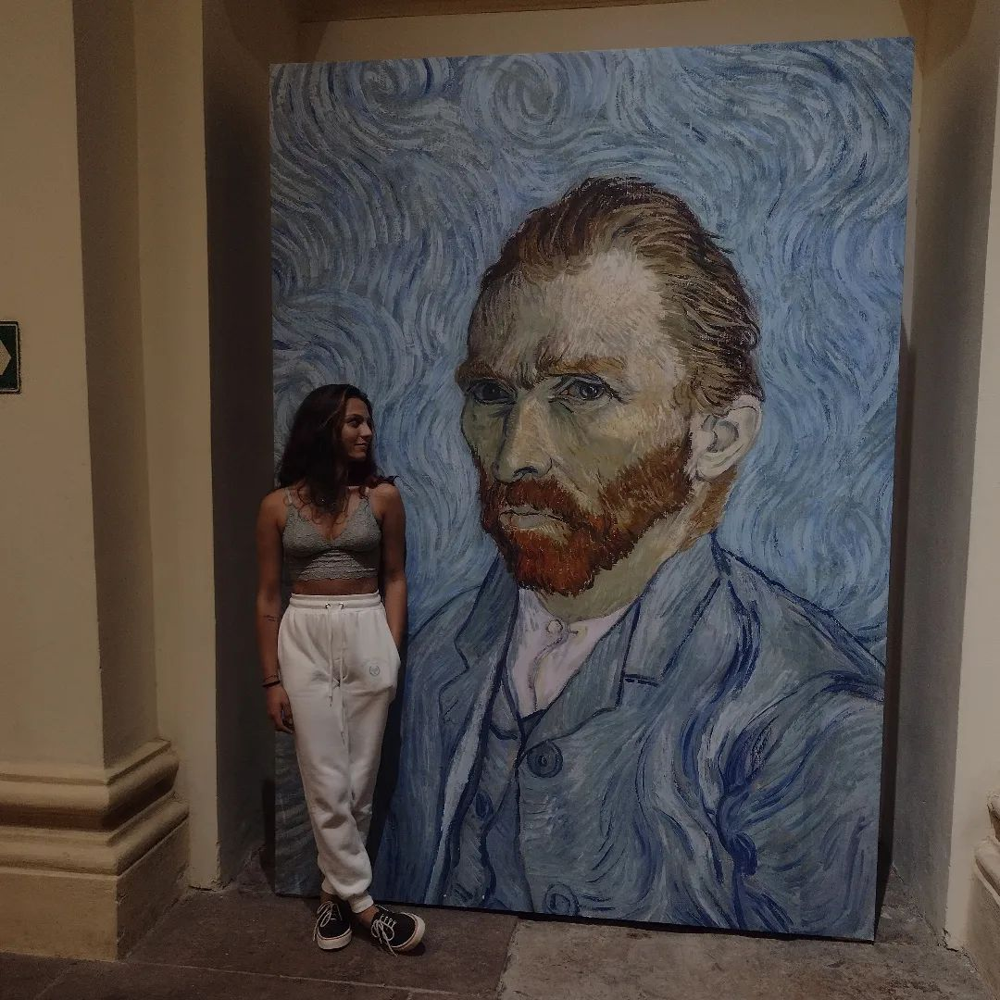

🌟 A M E L I E 🌟

➡
Aqui por exemplo mostra como que Alice também é cultura, ao lado do grande Van Gogh, ou em português pros leigos, Vão Gago, o pintor doidão que cortou a própria orelha (por ser doidão a gente nota por que ela se identificou).